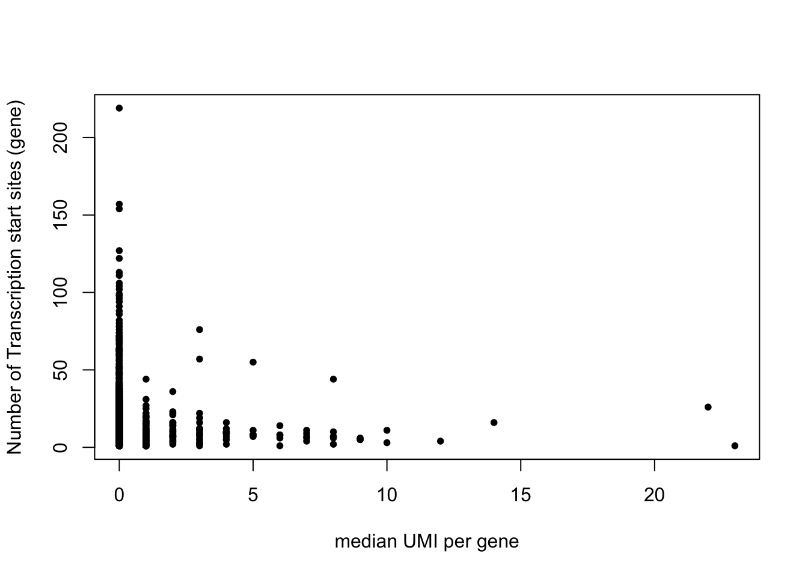

We check gene features for various genes of interest that show extremely high overall expression.
## [1] TRUE## [1] TRUE## [1] 705 17772## [1] 17772ensembl = useMart("ensembl",dataset="hsapiens_gene_ensembl")
filters = listFilters(ensembl)out <- getBM(attributes = c('external_gene_name', 'transcription_start_site'),
filters = 'external_gene_name',
values = rownames(TFH_UMI),
mart = ensembl)mat <- data.frame(tbl_df(out) %>% group_by(external_gene_name) %>%
summarise(n = n()))head(mat)## external_gene_name n
## 1 A1BG 5
## 2 A1BG-AS1 6
## 3 A1CF 3
## 4 A2M 13
## 5 A2ML1 9
## 6 A4GNT 1mat[order(mat$n, decreasing = TRUE)[1:50],]## external_gene_name n
## 1251 BAG6 219
## 6514 LST1 157
## 3100 DDX39B 154
## 8295 PCBP1-AS1 127
## 8985 PPT2 122
## 1638 C2 113
## 6104 LAIR1 111
## 6338 LINC00969 106
## 5189 HLA-F 104
## 2019 CCHCR1 102
## 7243 MSH5 99
## 4431 GABBR1 98
## 9114 PRRC2A 98
## 9119 PRRT1 96
## 66 ABHD16A 94
## 11221 SKIV2L 91
## 12309 TCF4 88
## 13642 VARS 86
## 1419 BRD2 82
## 3468 DXO 80
## 3584 EHMT2 78
## 4278 FLOT1 78
## 1071 ATAT1 76
## 5173 HLA-C 76
## 7585 NCR1 74
## 7677 NELFE 74
## 8274 PAX6 72
## 11996 STK19 72
## 13643 VARS2 72
## 2817 CSNK2B 71
## 6778 MDC1 71
## 3068 DDAH2 70
## 13125 TRIM39 70
## 84 ABR 69
## 5174 HLA-DMA 69
## 4740 GPANK1 68
## 5759 KANSL1 67
## 13707 VPS52 67
## 13119 TRIM31 66
## 7098 MOG 64
## 7598 NDRG2 64
## 7926 NRXN1 64
## 5178 HLA-DPA1 63
## 5179 HLA-DPB1 63
## 7920 NRM 63
## 11512 SMARCA2 63
## 3006 DAXX 62
## 4181 FCAR 62
## 5175 HLA-DMB 62
## 10681 RPP21 62idx <- match(mat$external_gene_name, rownames(TFH_UMI))
idx2 <- idx[!is.na(idx)]
medianUMI_genes <- apply(TFH_UMI[idx2, ], 1, function(x) return(median(x)))
mat2 <- cbind.data.frame(gene_name = rownames(TFH_UMI)[idx2],
medianUMI = medianUMI_genes,
n = mat$n[which(!is.na(idx))])head(mat2)## gene_name medianUMI n
## A1BG A1BG 0 5
## A1BG-AS1 A1BG-AS1 0 6
## A1CF A1CF 0 3
## A2M A2M 0 13
## A2ML1 A2ML1 0 9
## A4GNT A4GNT 0 1plot(mat2$medianUMI, mat2$n, ylab = "Number of Transcription start sites (gene)",
xlab = "median UMI per gene", pch = 20)
idx <- match(mat$external_gene_name, rownames(TFH_UMI))
idx2 <- idx[!is.na(idx)]
meanUMI_genes <- apply(TFH_UMI[idx2, ], 1, function(x) return(mean(x)))
mat2 <- cbind.data.frame(gene_name = rownames(TFH_UMI)[idx2],
meanUMI = meanUMI_genes,
n = mat$n[which(!is.na(idx))])head(mat2)## gene_name meanUMI n
## A1BG A1BG 0.001418440 5
## A1BG-AS1 A1BG-AS1 0.001418440 6
## A1CF A1CF 0.002836879 3
## A2M A2M 0.001418440 13
## A2ML1 A2ML1 0.002836879 9
## A4GNT A4GNT 0.001418440 1plot(mat2$meanUMI, mat2$n, ylab = "Number of Transcription start sites (gene)",
xlab = "mean UMI per gene", pch = 20)###--- Filtering datasets and merging
#- LN
identical(colnames(LiveCells_LN_UMI), rownames(LiveCells_LN_UMI_summary)) # TRUE## [1] TRUELiveCells_LN_UMI_filtered <- LiveCells_LN_UMI[, which(LiveCells_LN_UMI_summary$NUM_GENES >= 400 & LiveCells_LN_UMI_summary$NUM_TRANSCRIPTS >= 750)]
LiveCells_LN_UMI_filtered <- LiveCells_LN_UMI_filtered[which(apply(LiveCells_LN_UMI_filtered, 1, sum) != 0), ]
#- PBMC
identical(colnames(LiveCells_PBMC_UMI), rownames(LiveCells_PBMC_UMI_summary)) # TRUE## [1] TRUELiveCells_PBMC_UMI_filtered <- LiveCells_PBMC_UMI[, which(LiveCells_PBMC_UMI_summary$NUM_GENES >= 400 & LiveCells_PBMC_UMI_summary$NUM_TRANSCRIPTS >= 750)]
LiveCells_PBMC_UMI_filtered <- LiveCells_PBMC_UMI_filtered[which(apply(LiveCells_PBMC_UMI_filtered, 1, sum) != 0), ]
#- Merging
LiveCells_UMI <- rbind.fill(as.data.frame(t(LiveCells_LN_UMI_filtered)), as.data.frame(t(LiveCells_PBMC_UMI_filtered)))
rownames(LiveCells_UMI) <- c(paste(colnames(LiveCells_LN_UMI_filtered), 'LN', sep = '_'), paste(colnames(LiveCells_PBMC_UMI_filtered), 'PBMC', sep = '_'))
dim(LiveCells_UMI) ## [1] 826 16230length(unique(c(rownames(LiveCells_LN_UMI_filtered), rownames(LiveCells_PBMC_UMI_filtered)))) # 19,183 genes## [1] 16230LiveCells_UMI[is.na(LiveCells_UMI)] <- 0 # NAs - replace NA by 0
LiveCells_UMI <- as.data.frame(t(LiveCells_UMI))ensembl = useMart("ensembl",dataset="hsapiens_gene_ensembl")
filters = listFilters(ensembl)out <- getBM(attributes = c('external_gene_name', 'transcription_start_site'),
filters = 'external_gene_name',
values = rownames(LiveCells_UMI),
mart = ensembl)mat <- data.frame(tbl_df(out) %>% group_by(external_gene_name) %>%
summarise(n = n()))head(mat)## external_gene_name n
## 1 A1BG-AS1 6
## 2 A2M 13
## 3 A2M-AS1 1
## 4 A2ML1 9
## 5 AAAS 18
## 6 AACS 12mat[order(mat$n, decreasing = TRUE)[1:10],]## external_gene_name n
## 1114 BAG6 219
## 6033 LST1 157
## 2839 DDX39B 154
## 7699 PCBP1-AS1 127
## 8340 PPT2 122
## 5670 LAIR1 111
## 5872 LINC00969 106
## 4763 HLA-F 104
## 1815 CCHCR1 102
## 6728 MSH5 99idx <- match(mat$external_gene_name, rownames(LiveCells_UMI))
idx2 <- idx[!is.na(idx)]
medianUMI_genes <- apply(LiveCells_UMI[idx2, ], 1, function(x) return(median(x)))
mat2 <- cbind.data.frame(gene_name = rownames(LiveCells_UMI)[idx2],
medianUMI = medianUMI_genes,
n = mat$n[which(!is.na(idx))])head(mat2)## gene_name medianUMI n
## A1BG-AS1 A1BG-AS1 0 6
## A2M A2M 0 13
## A2M-AS1 A2M-AS1 0 1
## A2ML1 A2ML1 0 9
## AAAS AAAS 0 18
## AACS AACS 0 12plot(mat2$medianUMI, mat2$n, ylab = "Number of Transcription start sites (gene)",
xlab = "median UMI per gene", pch = 20)idx <- match(mat$external_gene_name, rownames(LiveCells_UMI))
idx2 <- idx[!is.na(idx)]
meanUMI_genes <- apply(LiveCells_UMI[idx2, ], 1, function(x) return(mean(x)))
mat2 <- cbind.data.frame(gene_name = rownames(LiveCells_UMI)[idx2],
meanUMI = meanUMI_genes,
n = mat$n[which(!is.na(idx))])head(mat2)## gene_name meanUMI n
## A1BG-AS1 A1BG-AS1 0.006053269 6
## A2M A2M 0.007263923 13
## A2M-AS1 A2M-AS1 0.002421308 1
## A2ML1 A2ML1 0.001210654 9
## AAAS AAAS 0.013317191 18
## AACS AACS 0.002421308 12plot(mat2$meanUMI, mat2$n, ylab = "Number of Transcription start sites (gene)",
xlab = "mean UMI per gene", pch = 20)This R Markdown site was created with workflowr